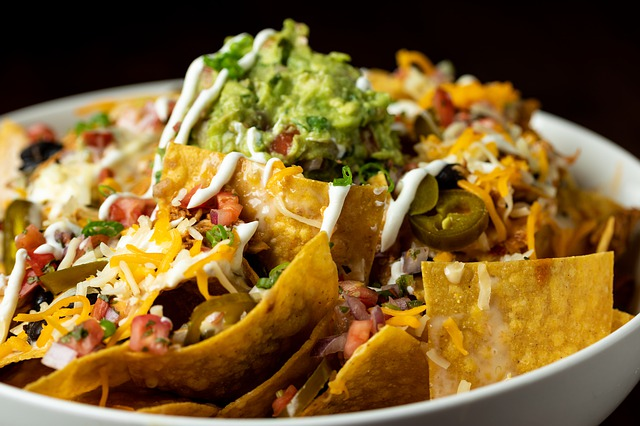

Nachos

Description
This makes a huge meal-sized tray of nachos with lots of good stuff! You can adjust
ingredient quantities to suit your preference.
Serve with extra chips if required. Great for game day.
Ingredients
- 1 pound ground beef
- 1 packet taco seasoning mix
- 3/4 cup water
- 1 packet restuarant style tortilla chips
- 1 cup shredded sharp cheddar cheese
- 1 can refried beans
- 1 cup salsa
- 1 cup sour cream
- 1 can pitted sliced black olives
- 4 green onions, sliced
- 1 can sliced jalapeno peppers
Steps
- Cook and stir ground beef in a skillet over medium heat until meat
is crumbly and no longer pink, 5 to 10 minutes. Drain excess grease.
Stir taco seasoning mix and water and simmer until beef mixture has
thickened, 8 to 10 minutes.
- Set oven rack aobut 6 inches from the heat source and preheat the broiler.
Line a baking sheet with aluminium foil.
- Spread tortilla chips on the prepared baking sheet, top with cheddar cheese
and dot with refried beans and ground beef mixture.
- Broil in the preheated oven until cheese is melted, watching carefully to
prevent burning, 3 to 5 minutes.
- Top nachos with salsa, sour cream, black olives, green onions, and
jalapeno peppers.
Back to Recipe List